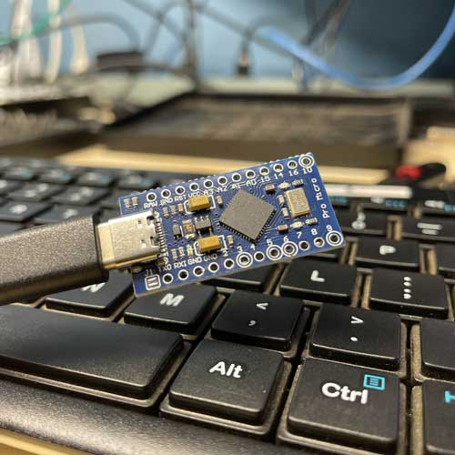
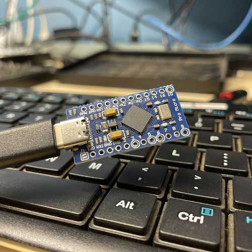

PhantomKey
Created by: Christopher Richardson
PhantomKey is an educational proof-of-concept project designed to demonstrate the risks associated with USB-based attack vectors in a controlled and ethical environment. Leveraging the capabilities of a programmable USB device, PhantomKey automates keystrokes upon connection to a target machine, initiating a PowerShell script that establishes a reverse TCP shell connection to an attacker-controlled system. This project highlights the dangers of untrusted USB devices, showcasing how malicious payloads can exploit common misconfigurations in endpoint security. PhantomKey is intended to raise awareness of these risks and to serve as a training tool for cybersecurity professionals to better understand, detect, and mitigate USB-based threats.
NOTE:
- To prevent this type of attack on the hardware level you can use USB port blockers.
- To prevent this type of attack on the software level it can easily be prevented by disabling powershell.
- The final way to prevent this type of attack is by implementing advanced endpoint protection tools that can monitor and restrict unauthorized USB device activity. Modern EDR solutions can detect unusual keystroke patterns.
Technical Skills Demonstrated:
- Microcontroller programming and automation.
- Understanding Attack Vectors.
- Reverse Shell Techniques.
- Threat Simulation
- Offensive Security Techniques